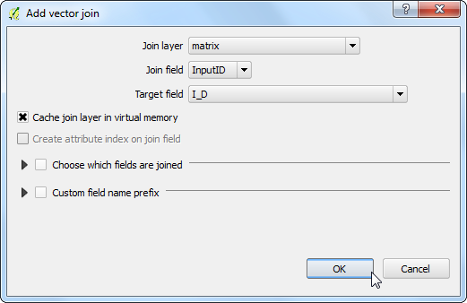
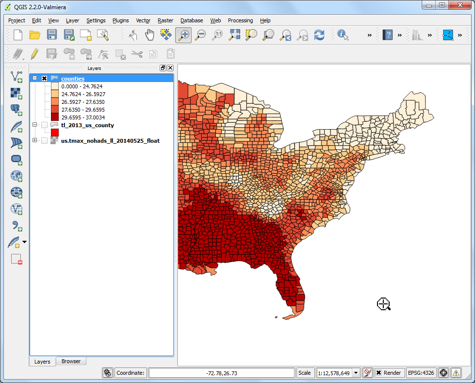
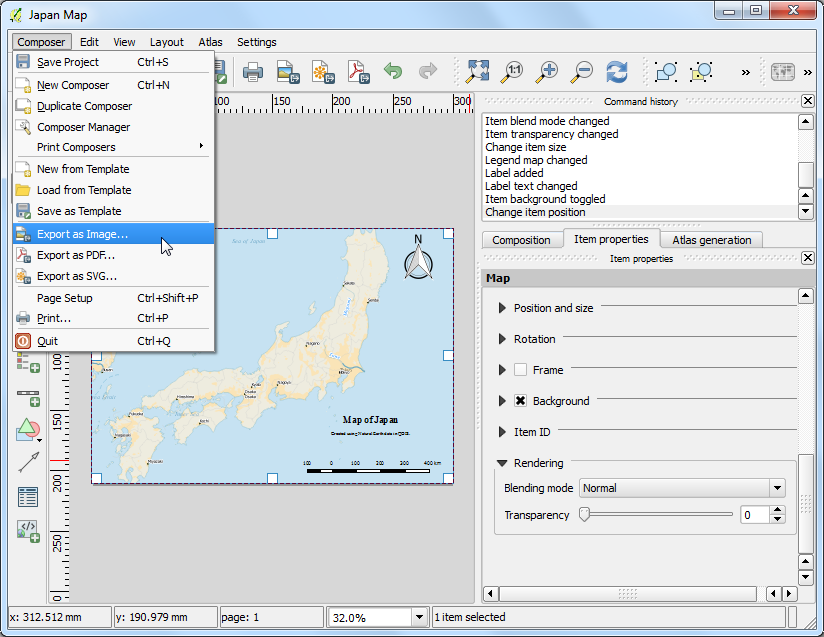

Realizzare e stampare una mappa
[ Download PDF A4 Letter ]
Spesso si ha necessità di creare una mappa che possa essere stampata o pubblicata. QGIS offre un potente strumento chiamato Print Composer che vi permetterà di usare i vostri layer GIS e per creare delle mappe e delle carte.
Descrizione dell’esercizio
The tutorial shows how to create a map of Japan with standard map elements like
map inset, grids, north arrow, scale bar and labels.
Other skills you will learn
- Using ‘on-the-fly’ CRS transformation to visualize your data in a different
projection.
Ottenere i dati necessari
Useremo il dataset Natural Earth - nello specifico the Natural Earth Quick Start Kit che presenta una serie di layers globali che sono ben tematizzati e che possono essere caricati direttamente su QGIS.
Scaricare the Natural Earth Quickstart Kit.
Fonte dati [NATURALEARTH]
Procedimento
Scaricate ed estraete il Natural Earth Quick Start Kit data. Aprite QGIS. Cliccate su

Cercate la cartella in cui avete estratto il dato. Dovreste vedere al suo interno un file che si chiama Natural_Earth_quick_start_for_QGIS.qgs. Questo è il file di progetto che contiene il layer tematizzato in formato QGIS. Click su apri.

Dovreste vedere parecchi layer nella tavola dei contenuti (TOC) e una mappa del mondo tematizzata nel riquadro di QGIS. Se vi viene mostrato un messaggio di errore in cima al riquadro fate click sulla croce per chiuderlo.

In questo esercizio realizzeremo una mappa del Giappone. Fate clcik sullo strumento ingrandisci e disegnate un rettangolo intorno al Giappone per ingrandire l’area.

- You can turn off some map layers for data that we do not need for this map.
Un-check the box next to 10m_geography_marine_polys and
10m_admin_0_map_units layers. Before we make a map suitable for printing, we need to choose an appropriate
projection. This dataset comes in Geographic Coordinate System (GCS) where
the units are degrees. This is not appropriate for a map where you want the
distances to be in kilometers or miles. We need to use a Projected
Coordinate System that minimizes distortions for our region of interest and
has units in meters. Universal Transverse Mercator (UTM) is a decent choice
for a projected coordinate system. It is also global, so it’s a good default
that you can rely on and choose a UTM zone that contains your area of
interest to minimize distortions for your region. In our case, we will use
UTM Zone 54N. Click the CRS Status button at the bottom-right of
the QGIS window.
Nota
Per il Giappone, il Japan Plane Rectangular CS è un sistema di coordinate proiettate (SR) progettato per ridurre al minimo le distorsioni. E’ diviso in 18 zone e se state lavorando su regioni del Giappone molto piccole usare questo sistema di riferimento è la scelta migliore.

Attivate la casella Abilita la riproiezione al volo . Digitate Tokyo utm zone54n nel Filtro per la ricerca. Quando vedrete comparire i risultati scegliete Tokyo / UTM Zone 54N - EPSG:3095. Fate click su Applica.

- Now we can start to assemble our map. Go to
.

- You will be prompted to enter a title for the composer. You can leave it
empty and click Ok.
Nota
Leaving the composer name empty will assign a default name such as
Composer 1.

- In the Print Composer window, click on Zoom full to display the
full extent of the Layout. Now we would have to bring the map view that we
see in the QGIS Canvas to the composer. Go to .

Una volta che il pulsante Aggiungi Mappa è attivo, tenete premuto il pulsante sinistro del mouse e trascinate un rettangolo dove intendete inserire la mappa.

- You will see that the rectangle window will be rendered with the map from
the main QGIS canvas. The rendered map may not be covering the full extent
of our interest area. Select
to pan the map in the window and center it in the composer.

- Let us adjust the zoom level for the given map. Click on the
Item Properties tab and enter 7000000 for Scale
value.

- Now we will add a map inset that shows a zoomed in view for the Tokyo area.
Before we make any changes to the layers in the main QGIS window, check
the Lock layers for map item and Lock layer styles
for map item boxes. This will ensure that if we turn off some layers or
change their styles, this view will not change.

- Switch to the main QGIS window. Use the Zoom In button to zoom
to the area around Tokyo.

- There are some duplicate labels coming from the ne_10m_populated_places
layer. You can turn it off for this view.

- We are now ready to add the map inset. Switch the the Print
Composer window. Go to .

- Drag a rectangle at the place where you want to add the map inset. You will
now notice that we have 2 map objects in the Print Composer. When making
changes, make sure you have the correct map selected. Select the Map 1
object that we just added from the Items panel. Select the
Item properties tab. Scroll down to the Frame panel
and check the box next to it. You can change the color and thickness of the
frame border so it is easy to distinguish against the map background.

- One neat feature of the Print Composer is that it can automatically
highlight the area from the main map which is represented in our inset.
Select the Map 0 object from the Items panel. In the
Item properties tab, scroll down to the Overviews
section. Click the Add a new overview button.

- Select Map 1 as the Map Frame. What this is telling the
Print Composer is that it must highlight our current object Map 0 with
the extent of the map shown in the Map 1 object.

- Now that we have the map inset ready, we will add a grid and zebra border
to the main map. Select the Map 0 object from the Items
panel. In the Item properties tab, scroll down to the
Grids section. Click the Add a new grid button.

- By default, the grid lines use the same units and projections as the
currently selected map projections. However, it is more common and useful
to display grid lines in degrees. We can select a different CRS for the
grid. Click on the change... button next to CRS.

- In the Coordinate Reference System Selector dialog, enter
4326 in the Filter box. From the results, select the
WGS84 EPSG:4326 as the CRS. Click OK.

- Select the Interval values as 5 degrees in both
X and Y direction. You can adjust the
Offset to change where the grid lines appear.

- Scroll down to the Grid frame section and select a frame style
that suits your taste. Also check the Draw coordinates box.

- Adjust the Distance to map frame till the coordinates are
legible. Change the Coordinate precision to 1 so the
coordinates are displayed only upto the first decimal.

- Now we will add a North Arrow to the map. The Print Composer comes with a
nice collection of map-related images - including many types of North
Arrows. Click .

Tenendo il pulsante sinistro del mouse premuto, trascinate un rettangolo nell’angolo in alto a destra della finestra principale di QGIS. Nel pannella sulla destra click sulla scheda Proprietà dell’oggetto e aprire la sezione Cerca cartelle . Selezionate la freccia del Nord che più vi piace.

Ora aggiungiamo una Barra di Scala. Fare click su .

- Click on the layout where you want the scalebar to appear. In the
Item Properties tab, make sure you have chosen the correct map
element for which to display the scalebar. Choose the Style that fit your
requirement. In the Segments panel, you can adjust the number
of segments and their size.

- It is time to label our map. Click on .

Fate click sulla mappa e trascinate un riquadro dove dovrebbe essere situata l’etichetta. Nella scheda Proprietà oggetto aprite la sezione Etichette e inserite in testo come mostrato sotto. Possia mo anche inserire il testo come HTML. Sbarriamo la casella Trasforma in HTML in modo che il Composer possa interpretare i tags HTML.
<div align=center>
<h1>Map of Japan</h1>
</div>

- Similarly add another label to add the data and software credits.

Una volta che siete soddisfatti della mappa, potete esportartarla come un’immagine, un PDF o un SVG. In questa esercitazione esportiamola come immagine. Click .

Salvate l’immagine nel formato che preferite. Quella che vedete di sotto è un’immagine esportata in formato PNG.